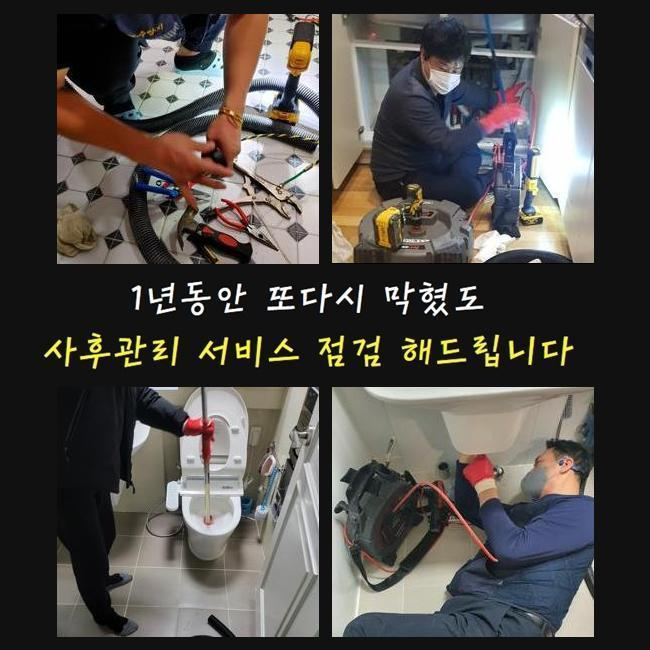
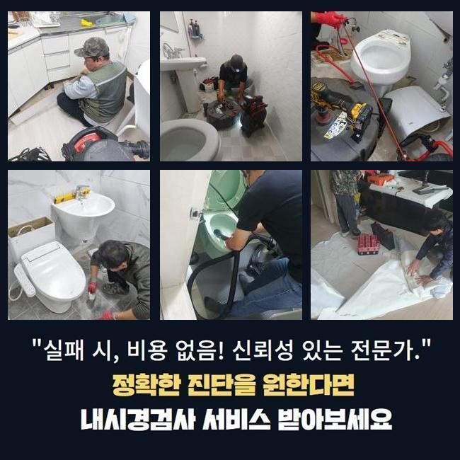
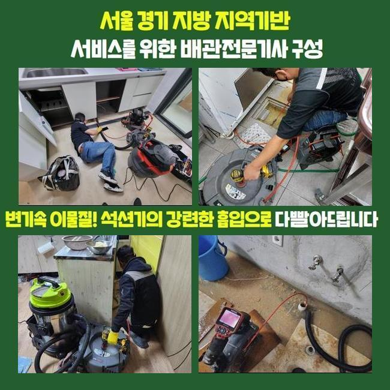
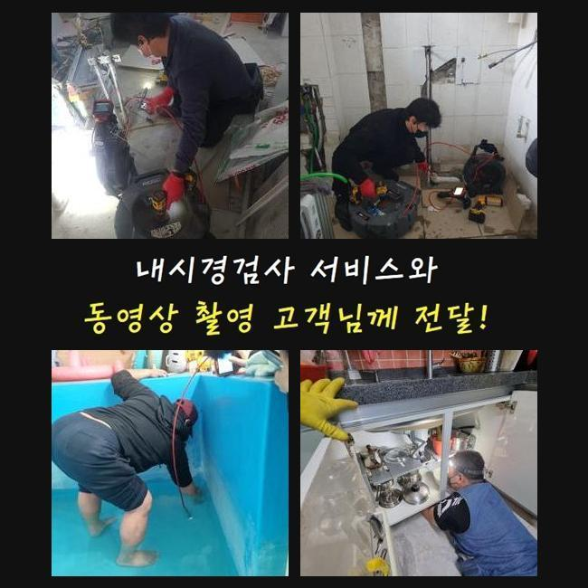
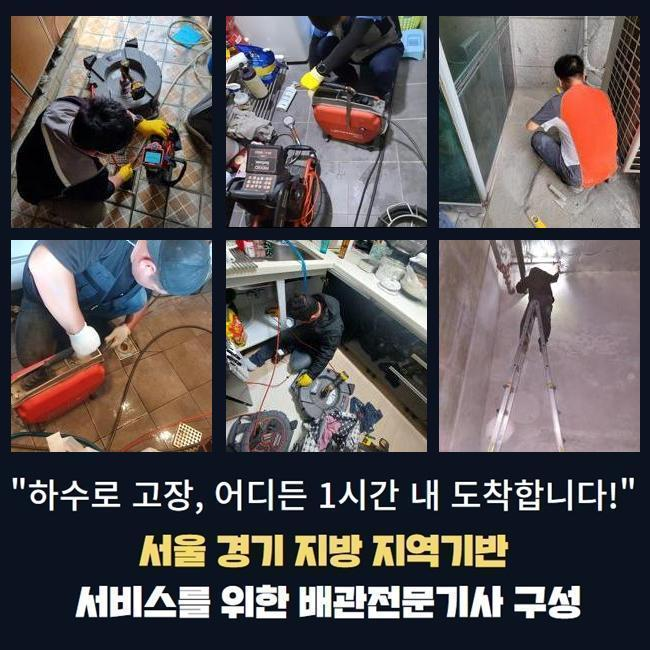
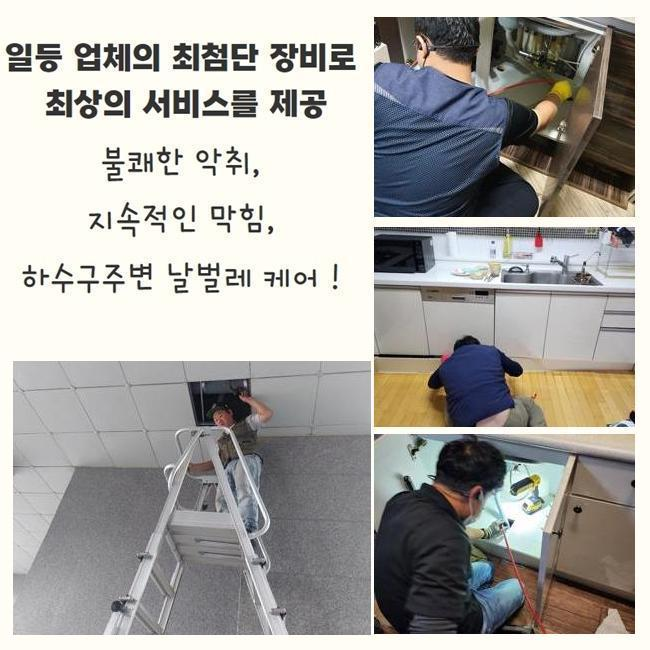
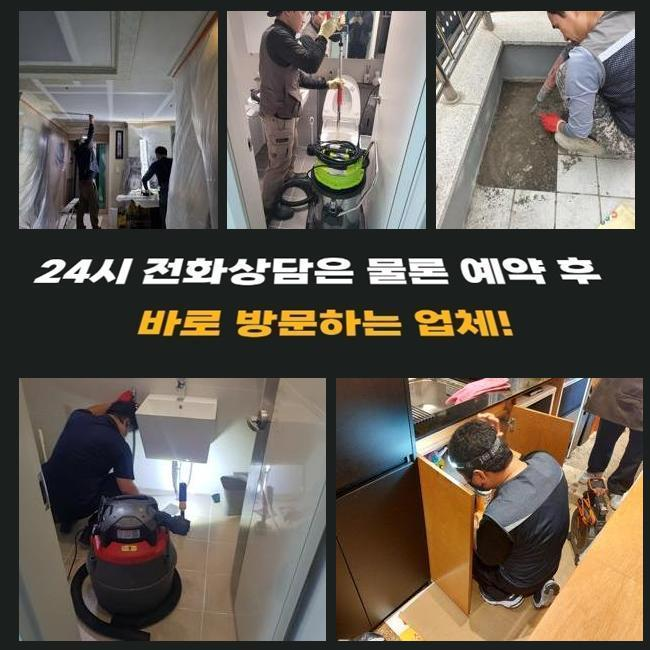

🏠 용산 변기막혔을때 성동 화장실역류
용인 변기막힘 전문 시공 후기

📋 작업 개요
- 위치: 용인
- 서비스 유형: 변기막힘, 하수구막힘, 배관막힘, 역류해결, 뚫는업체, 고압세척, 배관보수, 악취차단
- 작업 일시: 2024. 12. 3. 6:34
- 업체명: 하수구수사대 (010-5615-2118)
🔍 문제 상황
용산 변기막혔을때 성동 화장실역류
오래 사용해온 하수구에서 갑자기 이상이 생겨서 하수관이 시원치 않다는 출장 의뢰를 받고서 단단히 잘못된 설비를 보완해서 제기능을 되찾아드리고자 오늘의 장소를 찾아갔어요
하수구에 생기는 오류는 엄청나게 힘든 순간을 만들 수 있으니 즉각적이면서도 정확히 바로잡아야 합니다
나중으로 떠넘기면 문제가 더 커질 수 있으니 느릿느릿한 대처 보다는 서둘러서 활동하는 것이 완벽한 회복을 제공합니다
오늘 고쳐드린 현장의 경우는 한 다중주택 내에서 일어난 역류로 인해서 화장실의 바닥 쪽에 있는 배수관을 통해서 물이 빠져나오는 현상이 목격되어 고객님께서 수선을 도와달라고 하셨습니다
불현듯 나타난 하수구의 마비로 나름대로 뚫는 활동을 조금씩 해보다가 본격적인 수선을 부탁하셨습니다
작업장소에 장비를 챙겨간 이후 어떤 것이 문제가 된 요소인지 발견해 보기로 했습니다
화장실의 바닥 부근에서는 정상 배출이 이뤄지지 못하고 추가로 역류된 물도 생겨서 마치 연못처럼 물이 가득히 쌓여 있었습니다
물기가 화장실 내측에만 머물렀던 것이 아니고 물기가 닿는 범위가 주변까지 침투했습니다
매일같이 얼굴과 손을 씻는 세면대 근방에서도 물이 소통되지 않다 보니 욕실이 적셔졌고 문지방을 넘어서 거실에 깔린 장판까지 물기로 젖어버렸습니다

🔎 원인 분석
💡 전문가 진단: 정밀 진단 장비를 사용하여 슬러지의 고착 여부를 판명하고 타격/세척 작업을 실시했습니다.
욕실이라는 한정된 공간에서 형성된 불통이 거대한 수해를 입혀서 거주하시는 분들께 어려움을 유발하게 된 것입니다
이 문제를 수습해 드릴 수 있게끔 먼저 착수할 과제는 정밀한 분석과 배관 상황을 전체적으로 검토하는 것입니다
하수구의 고장은 몇 가지의 노폐물로 초래되는 막힘 상황도 있지만 배관의 배열이라거나 외부 요인으로 인한 변형 등 여러가지 원인들이 다면적으로 작용하기도 합니다
꼼꼼하게 확인을 해보니 해당 빌라는 다수의 배관이 한 관로로 수렴되어 옥외 배관으로 이어지는 구조라고 볼 수 있었습니다
이런 설계를 지니고 있다면 통로가 차단된다면 배수로 막힘이 더욱 쉽게 일어날 수 있으므로 자주 검토하면서 관리해야 합니다
대부분의 배수관 안에는 물때와 기름때 각질층 또한 일반 쓰레기들도 대규모로 눌어붙어서 하수의 일반적인 처리를 이뤄지지 못하게 훼방놓고 있었어요
상세한 문제의 동기를 구체적으로 전달해 드린 후 막힌 쪽을 제거하는 단계를 수행해서 문제를 극복해 나갈 전략에 대해 디테일하게 짚어드렸습니다
욕실 바닥면에 가득 잔여한 잔수를 제거하는 단계부터 실시했습니다
탁하던 잔수를 없애고 배관 속사정을 점검해 보았더니 기름때나 석회 성분이 상당량 쌓이고 또 쌓여있는 것을 바로 확인하게 됐습니다
점도가 있는 기름 슬러지와 석회 덩어리는 하수의 움직임을 차단하기도 하는데 시간이 흘러갈수록 더욱 화석처럼 강력하게 응고되어 완벽한 배관 봉쇄를 초래하게 되겠습니다
그러므로 간략하게 임하는 노폐물의 정리만으로는 꿈쩍도 하지 않으며 전문 스케일링 단계를 통해 배관을 여러 장비로 세척하는 게 중요했습니다

🔧 작업 과정
이 세척작업을 위해서 여러 형태의 배관에서 전방위적으로 이용하는 샤프트 장치를 켜서 업무를 담당했습니다
단단한 쇠로 이루어진 사슬이 빙글빙글 돌며 관로 안에 축적된 거대 장애물을 철저하게 제거해주는 기기입니다
특히나 부패되고 만성적인 석회화 물질처럼 벽면에서 분리가 힘든 오물들을 잘게 파편화 내어서 기존 형상으로 회복시키는 것에 두드러진 전문기기입니다
장비에 속한 사슬로 끈적한 덩어리를 해체하고 석회까지도 부숴주면서 막혔던 관로를 조금씩 청명하게 복구했습니다
신중하게 스케일링을 완료하고 우리는 이 사안을 유연하게 정돈했는지 봐야하므로 내시경 기기로 관찰해 보았습니다
본 내시경 장비는 보이지 않는 배관까지도 시각적으로 보여주는 도구로 깊은 곳에 자리한 곳까지 살펴보게 하니 정밀한 계획 설계에 도움이 됩니다
작업하고 내시경 기기로 배수로가 바뀌었는지 체크를 해봤더니 아까 더러웠던 곳과 다르게 결점없이 청결해진 게 보였습니다
고객분께도 현 상황을 선보여드리면서 애로사항이 모조리 정리됐음을 알려드렸습니다
어떤 기기를 차용해야 더 맑은 내부로 재생할 수 있을지에 대해서 충분히 고심한 뒤에 작업 진행을 합니다
필요에 따라 여러 조합으로 기계를 돌리기도 하며 사용 전에 허락을 구해요
확인 과정까지 끝내면 재차 전반적으로 물 방출도 해보았습니다
수돗물을 최대한 열어서 물기가 다 배출이 되는지 검토를 이어가보니 화장실과 주방 모두 잔량없이 빠져나갔으며 기다란 배관을 통과하여 야외 하수 수집구로 향하는 상황임을 알 수 있었네요
이와 같이 막힘의 핵심 뿌리를 뽑아낸 다음에도 원래 영위하던 정상적인 일상으로 즉각적으로 되돌아가시도록 깔끔하게 정리도 담당해 드립니다
잔여물이 있는 현장을 결점없이 치워드리면서 변화된 모습에 흡족하실 수 있게 끝처리까지 최선을 다합니다
하수구 기능이 멈추는 일은 그 부분만 해도 곤란하지만 빠른 수습이 결여되어 있다면 더욱 풀기 힘든 사태까지 연달아 일어날 수 있습니다
배관의 파손이 생기거나 위아래 세대까지도 손해를 입힐 수 있으니 발견 즉시 고쳐야 합니다
한 쪽만 치운다고 전체적인 이슈가 해결되는 의미는 아니기 때문에 작은 구석이라도 포함하여 신경써서 청결을 유지합니다


✅ 작업 완료
하수관은 중요성이 있는 시설물이니 적극적으로 나서서 보수를 해주어야 합니다
오래 유지되는 배관이면 계획적으로 배관진단을 의뢰해서 안전을 체크해야 큰 사고를 방어할 수 있습니다
잔량이 붙어있지는 않은지 예리하게 살펴보며 프로젝트를 완수했으니 또다시 관로가 막히는 일은 찾아오지 않을 것입니다
관련된 질문들도 열린 마음으로 받으며 도움이 되는 사용법까지 안내드려요
하수 이용을 방해하는 사안들을 상쾌하게 해소해 드릴테니 저희 손길이 필요하시다면 연락해 주시기를 바랍니다




⚠️ 하수구 배관 막힘 예방 및 관리 가이드
- ✅ 머리카락, 비닐, 물티슈 등 물에 분해되지 않는 이물질은 하수구 유입을 절대 금지해 주세요.
- ✅ 하수구 거름망을 씌우고 모여진 이물질은 주기적으로 쓰레기통에 바로 비워주셔야 합니다.
- ✅ 배관 노후가 심할 경우 이물질이 더 쉽게 걸리므로 주기적인 배관 세척(고압세척 등)을 권장합니다.
- ✅ 작업 후 1년 이내 재발 시 하수구수사대에서 무상 A/S 보증 서비스를 제공합니다.
💡 핵심 정리
- 확실한 장비 작업(내시경 점검 및 샤프트 스케일링)으로 원인을 뿌리 뽑습니다.
- 작업 후 1년 이내에 동일한 부위 재발 시 100% 무상 A/S 서비스를 보장합니다.
- 서울 · 경기 · 인천 전 지역에 24시간 언제든 긴급 출동할 수 있도록 항시 대기 중입니다.
❓ 자주 묻는 질문 (FAQ)
🚨 용인 변기막힘 문제로 고민이신가요?
정확한 원인 진단과 확실한 시공으로 재발 없는 해결을 약속드립니다.
24시간 긴급 출동 | 서울 · 경기 · 인천 전지역 | 1년 내 재발 시 무상 A/S